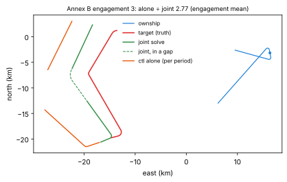
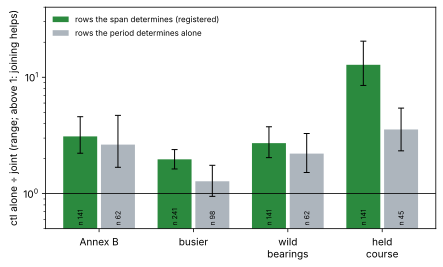
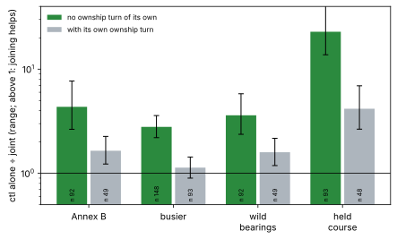
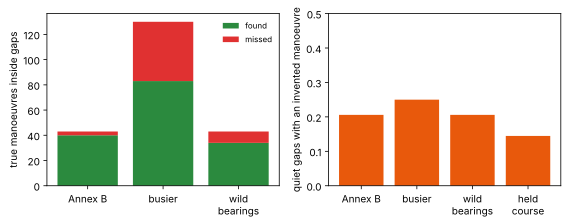

Time-late over several periods of one target, joined through the gaps
2026-11-18 · spec 025 · gitma2 · nothing trained
The idea
- Contact comes and goes: two or three periods (15–30 min) with gaps (5–30 min) of no bearings
- Solve each period alone (the standing control
ctl), or one solve over the whole span, the track continuous through the gaps
- The joint solve is
ctl unchanged: the gaps' bearings are marked missing

Engagement chosen by rule (median engagement among the stored three-period ones), test seed 353.
The registered verdict: gain on all four splits, no harm

Green: the registered rows (span bound below 0.5). Grey: rows the period determines alone. Annex B 3.10 [2.22, 4.58]; busier 1.97 [1.63, 2.39]; busier on own rows 1.28 [0.95, 1.75] (not shown).
Where the gain comes from: periods without their own ownship turn

The one by-kind difference real on every split (panel). With an own turn: 1.65 Annex B, 1.13 [0.90, 1.43] busier.
Manoeuvres hidden in the gaps

Found 40 of 43 (Annex B), 83 of 130 (busier). Invented in about a fifth of quiet gaps; nothing in the output marks an inferred gap manoeuvre.
What the panel narrowed
- Mostly "an answer where alone had none" (alone's median range error there 0.46); where a period stands alone: about 1.6 Annex B, not shown on busier targets
- Held course 12.8 is "the span is one leg": not a measure of reach
- Wild bearings is the same engagements as Annex B: not an independent replication
- One period in eight is twice as bad joined, unflagged
- Soundness: a gross-fault screen, not an efficiency check (re-registered after the first had no power)
Not achieved
- No comparison with carrying state between windows (spec 024)
- No flag for a failed join; no stated uncertainty
- Gaps over 30 min, association across a gap, several targets: untested
- IMM/EKF tracks, a test of the runner's slicing, a re-measure of run-to-run variation
Next (owner's choice)
- Score spec 024's carried state on these engagements
- A per-period consistency flag and gap-manoeuvre markers, then an uncertainty for the joined track
- A stress split with longer, busier gaps
Write-up: /blog/2026/11/18/joined-periods · Record: experiments/20261118-tl8 · Figures: scripts/research/tl8_charts.py, sidecars next to each SVG